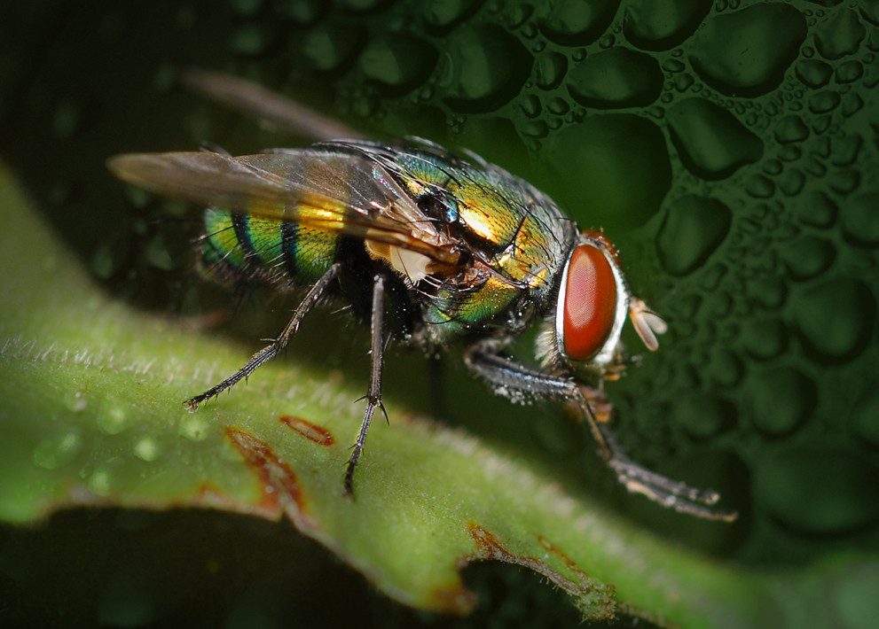

Home
Home Ants
Ants Bees
Bees Beetles
Beetles Butterflies
Butterflies Cockroaches
Cockroaches Flies
Flies Mosquitoes
Mosquitoes Spiders
Spiders Newsletter
Newsletter
Description
Flies are the most diverse insect group in North America with over 100,000 known species. They all have their hind pair of wings reduced to pin-shaped structures called halteres which act as gyroscopes to maintain balance in flight. Flies are essential, highly mobile insects with over 100,000 species worldwide, serving as major pollinators and decomposers. They possess unique compound eyes for a nearly 360-degree view and taste with their feet.
Source: Animal Diversity Web
Flies
Range
Flies are globally ubiquitous, inhabiting nearly all terrestrial environments from the Arctic to tropical rainforests. They thrive in warm, damp, and humid areas, including urban, rural, forest, and agricultural zones, often breeding in decaying organic matter and garbage.
Diet
House flies cannot eat solid food. They vomit digestive enzymes onto food to liquefy it, then use their straw-like proboscis to drink it. Flies have sensors on their feet (tarsi) that allow them to taste food immediately upon landing.
Behavior
Adult houseflies are diurnal, and their activity peaks at the hottest and driest part of the day, between 2 and 4pm. Adults are inactive at night but move to artificial light during both day and night.
Conservation
Houseflies are highly abundant and not threatened or endangered.
Fun Fact
Adult flies do not grow. A small fly is not a baby fly, but rather one that did not receive enough food during its larval stage.